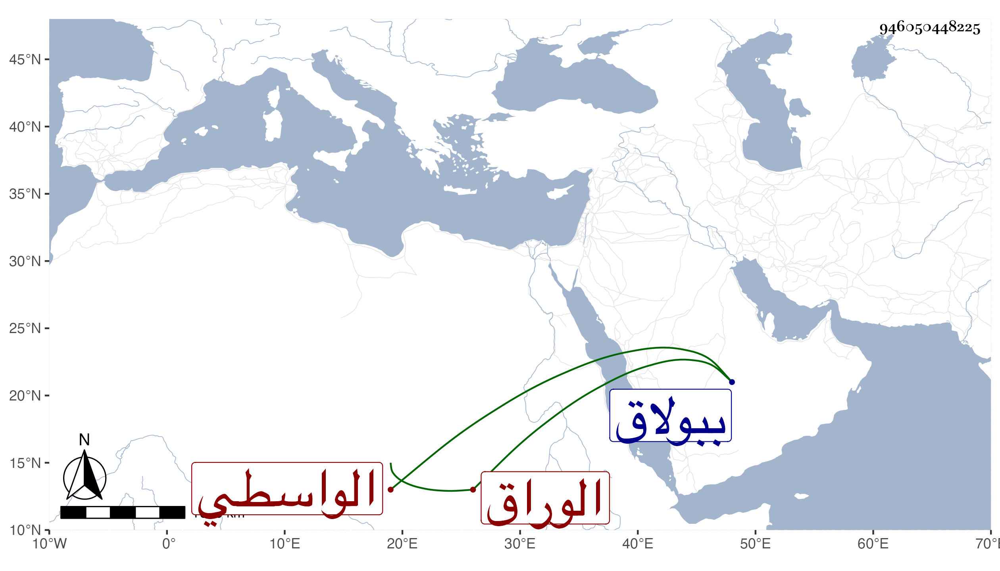

0902Sakhawi.DawLamic.ITO20230111-ara1.EIS1600.946050448225
Biography ID: 946050448225
814
أحمد الوراق نزيل الجامع الواسطي ببولاق وأحد المعتقدين عند العامة ونحوهم ، ممن زرته ودعا لي وكان يحج في كل سنة والفتوحات ترد عليه وحكى لي أن بعضهم سأله الدعاء وهو جالس بالروضة النبوية . فقال له يا قليل العقل في هذا المحل وأنت عند سيد الكل هذا أو نحوه ، مات في المحرم سنة سبع وخمسين ودفن بالجامع المذكور رحمه الله تعالى .
